정보처리산업기사 (2001-03-04 기출문제)
1과목: 데이터 베이스
1. 데이터베이스를 구축하는 목적과 거리가 먼 것은?
- 데이터의 일관성 유지
- 데이터의 무결성 유지
- 데이터의 중복성 유지
- 데이터의 공유
(정답률: 92%)

2. 뷰(view)의 장점으로 거리가 먼 것은?
- 데이터의 논리적 독립성을 제공한다.
- 데이터에 대한 보안이 제공된다.
- 삽입, 삭제, 갱신, 연산에 유연성을 제공한다.
- 같은 데이터를 다양한 방법으로 볼 수 있게 한다.
(정답률: 73%)
3. 정규화(Normalization)는 데이터베이스의 물리적 구조나 처리에 영향을 주지 않고 논리적 처리 및 품질에 영향을 미친다. 정규화하지 않을 경우에는 이상(anomaly) 현상, 즉 잠재적인 문제점들이 발생한다. 다음 중 이상 현상의 형태에 해당하지 않는 것은?
- 삽입 이상 현상
- 링크 이상 현상
- 갱신 이상 현상
- 삭제 이상 현상
(정답률: 73%)
4. Fill in blank of the sentence(문제 오류로 실제 시험장에서는 가, 다번을 정답 처리한 문제입니다. 이곳에서는 가번을 정답 처리 하겠습니다.)
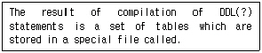
- data dictionary
- database
- catalog
- index
(정답률: 73%)
5. 관계 데이터 모델에서 키에 대한 설명으로 옳지 않은 것은?
- 릴레이션에 있는 모든 튜플들을 유일하게 식별할 수 있는 하나 또는 몇 개의 애트리뷰트 집합을 그 릴레이션의 후보키라 한다.
- 널 값을 가지더라도 모든 튜플을 구분할 수 있으면 기본 키가 된다.
- 후보키가 둘 이상 되는 경우에 그 중에서 어느 하나를 선정하여 기본키라 지정하면, 나머지 후보키들은 대체키가 된다.
- 유일성만 있고 최소성이 없는 애트리뷰트 집합을 슈퍼키라 한다.
(정답률: 75%)
6. 데이터베이스의 3단계 스키마 구조에 대한 설명으로 옳지 않은 것은?
- 내부적 스키마는 데이터베이스의 논리적 저장구조를 묘사한다.
- 외부적 스키마는 데이터베이스 전체에서 특정 사용자 그룹이 관심을 가지고 있는 일부분만을 묘사한다.
- 데이터베이스관리시스템은 외부스키마에 따라 명시된 사용자의 요구를 개념스키마에 적합한 형태로 변경하고 이를 다시 내부적 스키마에 적합한 형태로 변환한다.
- 개념적 수준에서는 사용자 집단을 위한 전체 데이터베이스의 구조를 묘사한다.
(정답률: 39%)
7. 다음 문자의 ( ) 안에 해당되는 용어는?
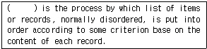
- Array
- List
- Tree
- Sort
(정답률: 41%)
8. 개체-관계(Entity-Relational) 모델에 대한 설명으로 옳지 않은 것은?
- 1976년 P.Chen에 의해 처음으로 제안되었다.
- E-R 모델이 널리 사용되는 이유 중의 하나는 데이터베이스 응용스키마 정의를 나타내는 것과 관련된 다이어그램 기법이기 때문이다.
- 개체 타입(Entity Type)과 이들 간의 관계 타입(Relationship Type)를 이용해서 현실 세계를 개념적으로 표현한다.
- E-R Diagram에 사용되는 요소들은 개체 집합을 나타내는 사각형, 관계 집합인 나타내는 이중 화살표 등으로 구성된다.
(정답률: 71%)
9. 자기테이프에서 레코드의 크기는 10이고, 불록의 크기가 200인 경우 blocking factor는?
- 2·
- 20
- 200
- 2000
(정답률: 61%)
10. 보기와 같은 그래프에서 인접행렬이 옳게 된 것은?
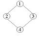
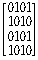
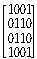
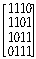
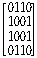
(정답률: 55%)
11. 데이터 정의어(Data Definition Language)의 기능으로 거리가 먼 것은?
- 외부 스키마 명세
- 데이터베이스 정의 및 수정
- 스키마에 사용되는 제약조건 명세
- 사용자와 DBMS 간의 인터페이스 제공
(정답률: 61%)
12. 다음 중 진법에 의한 변환 값이 다른 하나는?
- (F4)16
- (11110100)2
- (244)10
- (360)8
(정답률: 64%)
13. 두 릴레이션 R, S에 대한 교집합의 차수(degree)로 적합한 것은?
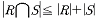
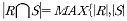
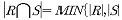
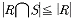
(정답률: 40%)
14. 다음 그래프 중 보기의 신장트리(spanning tree)가 아닌 것은?
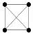
(정답률: 53%)
15. 선형구조에 해당하지 않는 것은?
- 그래프(graph)
- 큐(queue)
- 스택(stack)
- 배열(array)
(정답률: 80%)
16. 내장 SQL(embedded SQL)에 대한 설명으로 옳지 않은 것은?
- 내장 SQL문은 일반 대화식 SQL문에 ‘EXEC SQL'을 추가로 앞에 붙인다.
- SQL문은 주언어 변수(host variable)의 참조를(?) 포함 할 수 없다.
- 주언어 변수(host variable)와 데이터베이스 필드는 같은 이름을 가질 수 있다.
- 내장 SQL문의 호스트 변수의 데이터 타입은 이에 대응하는 데이터베이스 필드의 SQL 데이터 타입과 일치해야 된다.
(정답률: 54%)
17. 다음 두 집합 X와 Y의 대응관계를 보인 그림 중 다대 일(N:1)의 관계는?
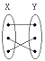
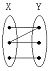
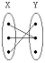
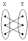
(정답률: 54%)
18. 데이터베이스 설계 단계의 순서로 옳은 것은?
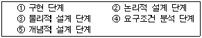
- ④-⑤-②-③-①
- ①-②-③-④-⑤
- ④-②-⑤-③-①
- ④-③-⑤-②-①
(정답률: 84%)
19. 스택을 이용한 응용 분야로 적합하지 않은 것은?
- 인터럽트 처리
- 함수호출의 순서제어
- 작업 스케줄링
- 수식의 계산
(정답률: 68%)
20. 다음 두 릴레이션 간의 관계에서 교수 릴레이션에 존재하는 외래키는?(단, 교수 릴레이션의 기본 키는 교수번호이고 학과 릴레이션의 기본 키는 학과번호이다.)
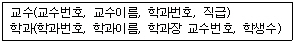
- 교수이름
- 학과번호
- 학과장 교수번호
- 학과이름
(정답률: 74%)
2과목: 전자 계산기 구조
21. 성능을 향상시키기 위하여 주기억 장치와 CPU 레이스터 사이에서 데이터를 이동시키는 중간 버퍼로 작용하는 기억장치는?
- CD
- C 드라이브
- 캐시 기억장치
- 누산기
(정답률: 78%)
22. 메모리 인터리빙(interleaving) 방법의 사용 목적이 되는 것은?
- 메모리 액세스의 효율 증대
- 기억 용량의 증대
- 입·출력 장치의 증설
- 전력 소모 감소
(정답률: 69%)
23. 연산결과를 기억장치로 보내기 전에 잠시 보관하는 레지스터는?
- Adder
- Accumulator
- Index Register
- Core Memory
(정답률: 60%)
24. 인터럽트 수행 후에 처리되는 것은?
- 전원을 다시 동작시킨다.
- 모니터 화면에 인터럽트 종류를 디스플레이 한다.
- 메모리의 내용을 지워서 다른 프로그램이 적재될 수 있도록 한다.
- 인터럽트 처리시 보존시켰던 PC 및 제어상태 데이터를 PC와 제어상태 레지스터에 복구한다.
(정답률: 75%)
25. CPU내 제어기의 제어 데이터 중에 포함되지 않는 것은?
- 각 메이저 스테이트 사이의 변천을 제어하는 제어 데이터
- 중앙처리장치의 제어점을 제어하는데 필요한 제어 데이터
- 인스트럭션의 수행순서를 결정하는데 필요한 제어 데이터
- 입출력 장치의 제어점을 제어하는 제어 데이터
(정답률: 41%)
26. 마이크로 오퍼레이션 중 우선적으로 이루어져야 하는 것은?
- PC←PC+1
- IR←MBR
- MAR←PC
- MBR←PC
(정답률: 54%)
27. 2진수 (1010)2 을 그레이 코드 변환하면?
- (1010)
- (0101)
- (1111)
- (0000)
(정답률: 66%)
28. 4비트로 나타낼 수 있는 정보 단위는?
- nibble
- character
- full-word
- double-word
(정답률: 59%)
29. 정보를 기억장치에 기억시키거나 읽어내는 명령이 있고난 후 부터 실제로 기억 또는 읽기가 시작되는데 소요되는 시간은?
- Acess time
- Cycle time
- Turn around time
- Seek time
(정답률: 53%)
30. 내용에 의하여 액세스 되는 메모리 장치는?
- CAM
- ROM
- 가상(virtual)
- 레지스터 기능
(정답률: 46%)
31. 레지스터 R`에 있는 내용을 왼쪽으로 2비트 시프트 시키는 기능과 관계 있는 것은?
- 제어 기능
- 연산 기능
- 전송 기능
- 레지스터 기능
(정답률: 51%)
32. 다음의 어셈블리어로 나타낸 기본적인 명령(instruction) 중 제어 기능을 가진 명령만으로 짝지어진 것은?
- JMP X, ROL
- LAD X, SZC
- SMA, JMP X
- JMP X, LAD X
(정답률: 45%)
33. PUSH, POP 명령어 처리시 처리되는 메모리 주소는?
- 스텍의 데이터
- AX의 데이터
- SI의 데이터
- DI의 데이터
(정답률: 83%)
34. 계산결과를 시험할 필요가 있을 때 계산 결과가 기억장치에 기억 될 뿐 아니라 중앙처리장치에도 남아 있어서 중앙처리장치 내에서 직접 시험이 가능하므로 시간이 절약되는 인스트럭션 형식은?
- 3주소 인스트럭션 형식
- 2주소 인스트럭션 형식
- 1주소 인스트럭션 형식
- 0주소 인스트럭션 형식
(정답률: 36%)
35. 비교(compare) 동작과 같은 동작을 하는 논리 연산은?
- 마스크(mask) 동작
- OR 동작
- 배타적(exclusive)
- AND 동작
(정답률: 51%)
36. 8개의 bit로 표현 가능한 정보의 최대 가지수는?
- 8
- 64
- 255
- 256
(정답률: 59%)
37. 인터럽트 요인이 받아들어 졌을 때 CPU가 확인하여야 할 사항에 불필요한 것은?
- 프로그램 카운터의 내용
- 상태 조건의 내용
- 레지스터의 내용
- 스택 메모리의 내용
(정답률: 39%)
38. 10진수 9를 Excess-3 code로 변환하면?
- 1001(E)
- 1110(E)
- 1101(E)
- 1100(E)
(정답률: 39%)
39. 인터럽트 원인이나 종류를 관발하는(?) 소프트웨어에 의한 방법은?
- Polling
- Daisy chain
- Decoder
- Multiplex
(정답률: 71%)
40. 해밍 코드 방식에 의하여 구성된 코드가 16 비트인 경우 데이터 비트의 수 및 패리티 비트의 수는 각 각 몇 개씩인가?
- 데이터비트 : 11비트, 패리티비트 : 5비트
- 데이터비트 : 10비트, 패리티비트 : 6비트
- 데이터비트 : 12비트, 패리티비트 : 4비트
- 데이터비트 : 15비트, 패리티비트 : 1비트
(정답률: 25%)
3과목: 시스템분석설계
41. 다음 중 입력 설계시 가장 먼저 설계하는 항목은?
- 입력정보 수집의 설계
- 입력정보 매체의 설계
- 입력정보 발생의 설계
- 입력정보 내용의 설계
(정답률: 52%)
42. Coad와 Yourdon의 객체 지향 설계에 대한 설명으로 옳지 않은 것은?
- 메시지 프로토콜을 간단하게 유지한다.
- 설계 절차는 분석 사항을 상향식 방법으로 설계에 접근하여 프로토타입으로 개발한다.
- 전체 시스템 규모를 최소화한다.
- 서비스를 간단하게 유지하며 설계의 변경을 최소화한다.
(정답률: 55%)
43. 마스터 파일(master file)의 갱신 및 내용을 변경하거나 참조할 때 사용되는 일시적인 성격을 지닌 정보를 기록하는 파일은?
- 작업(work) 파일
- 히스토리(history) 파일
- 섬머리(summary) 파일
- 트랜잭션(transaction) 파일
(정답률: 63%)
44. 자료 사전에 사용되는 기호 중 반복을 의미하는 것은?
- +
- ( )
- [ ]
- { }
(정답률: 64%)
45. 입력 매체인 종이 테이프 또는 펀치 카드상의 데이터를 자기 디스크에 수록하는 처리는 프로세스의 표준 패턴 중 어디에 해당하는가?
- 분류(sorting)
- 병합(merge)
- 매체변환(conversion)
- 대조(matching)
(정답률: 61%)
46. 각 객체에 저장된 정보로서 한 클래스내에 속하는 객체들이 가지고 있는 데이터들의 값들을 단위별로 정의하게 되며 성질, 분류, 식별, 수량 또는 상태 등을 표현하는 것은?
- 속성(attribute)
- 클래스(class)
- 메시지(message)
- 관계성(relationship)
(정답률: 67%)
47. 다른 모듈 내의 외부 선언을 하지 않은 자료를 직접 참조하므로 의존도가 대단히 높고, 순서 변경이 다른 모듈에 영향을 주기 쉬운 모듈 결합도에 해당하는 것은?
- 제어 결합
- 외부 결합
- 공통결합
- 내용결합
(정답률: 42%)
48. 소프트웨어 비용 산출시 고려해야 할 요소로서 거리가 먼 것은?
- 제품의 복잡도
- 제품의 크기
- 프로그래머의 자질
- 운용비
(정답률: 31%)
49. 시스템이 구비해야 할 특성으로 거리가 먼 것은?
- 편리성
- 목적성
- 자동성
- 제어성
(정답률: 48%)
50. 코드화 대상 항목의 설질 즉, 길이, 넓이, 부피, 높이 등을 나타내는 의미가 있는 문자, 숫자, 혹은 기호를 그대로 나타내는 의미가 있는 문자, 숫자, 혹은 기호를 그대로 사용하는 코드는?
- sequence code
- significant digit code
- block code
- group code
(정답률: 68%)
51. HIPO는 시스템 설계 또는 시스템 문서화용으로 사용되고 있는 기법이다. HIPO를 사용하는 장점으로 거리가 먼 것은?
- 보기 쉽고 알기 쉽다.
- 변경, 유지보수가 쉽다.
- 기능과 데이터의 의존관계를 동시에 표현할 수 있다.
- 상향식(down-top) 개발이 쉽다
(정답률: 71%)
52. 색인 순차(index sequence) 편성 파일에서 인덱스 영역(index area)에 해당하지 않는 것은?
- 트랙 인덱스 영역(track index area)
- 실린더 인덱스 영역(cylinder index area)
- 기본 인덱스 영역(prime index area)
- 마스터 인덱스 영역(master index area)
(정답률: 67%)
53. HIPO 패키지의 3단계 다이어그램에 해당하지 않는 것은?
- Visual table of contents
- Overview diagram
- Detail diagram
- Table diagram
(정답률: 36%)
54. 코드 설계 순서로 옳은 것은?
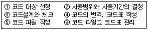
- ①②③④⑤⑥
- ⑥⑤④③②①
- ②①④③⑥⑤
- ①②④③⑥⑤
(정답률: 62%)
55. 시스템 분석자와 설계자가 갖추어야 할 조건에 대한 설명으로 옳지 않은 것은?
- 기업의 목적을 정확히 이해해야 한다.
- 업계의 동향 및 관계 법규 등도 파악해야 한다.
- 컴퓨터 기술과 관리 기법을 알아야 한다.
- 현정 분석 경험은 중요하지 않다.
(정답률: 78%)
56. 마스터 파일 안의 정보를 트랜잭션 파일에 의해 추가, 삭제, 교환하고, 그 새로운 내용의 마스터 파일을 작성하는 것을 무엇이라 하는가?
- 갱신(update)
- 병합(merge)
- 변환(conversion)
- 삽입(insert)
(정답률: 81%)
57. 이미 정의되어 있는 상위 클래스의 메소드를 비롯한 모든 속성을 하위 클래스가 물려받는 것으로, 이를 이용하면 하위 클래스는 상위 클래스의 메소드 및 모든 속성을 자신의 클래스 내에 다시 정의하지 않고서도 자신의 속성으로 가질 수 있는 것은?
- method
- information hidden
- inheritance
- polymorphism
(정답률: 55%)
58. 컴퓨터 입력 단계의 체크에서 입력 정보의 두 가지 이상이 특정 항목의 합계 값과 같다는 것을 알고 있을 때, 계산 결과가 같게 되는지를 체크하는 것은?
- 순차체크(sequence check)
- 범위체크(limit check)
- 일괄 합계 체크(batch total check)
- 균형체크(balance check)
(정답률: 40%)
59. 코드의 기능에 대한 설명으로 거리가 먼 것은?
- 정보의 분류 및 조합을 쉽게 한다.
- 자료의 구별 및 추출을 쉽게 한다.
- 새로운 정보를 산출해 낸다.
- 정보의 표현을 단순화, 표준화한다.
(정답률: 75%)
60. 시스템의 기본 구성 요소에 해당하지 않는 것은?
- 제어
- 입출력
- 처리
- 평가
(정답률: 73%)
4과목: 운영체제
61. 로더(loader)에 대한 설명으로 옳지 않은 것은?
- 로더는 링킹-재배치-로딩-주기억장치 할당의 순서로 기능을 수행한다.
- 재배치(relocation)로더는 단순한 로딩이에 목적 프로그램의 재배치를 담당한다.
- 컴퓨터 내부로 정보를 들어오거나 또는 외부 기억장치로부터 정보들을 주기억 장치 내에 적재하는 프로그램이다.
- 동적(dynamic) 로더는 프로그램을 한꺼번에 적재하는 것이 아니라 실행시 필요한 일부분만을 차례로 적재하는 방식이다.
(정답률: 23%)
62. Round-Robin 스케쥴링(Scheduling) 방식에 대한 설명으로 옳지 않은 것은?
- 할당된 시간(Time Slice) 내에 작업이 끝나지 않으면 대기큐의 맨 뒤로 그 작업을 배치한다.
- 시간 할당량이 작아질수록 문맥교환 과부하는 상대적으로 낮아진다.
- 시간 할당량이 충분히 크면 FIFO 방식과 비슷하다.
- 적절한 응답시간이 보장되므로 시분할 시스템에 유용하다.
(정답률: 62%)
63. 프로세스(process)에 대한 설명으로 거리가 먼 것은?
- 실행중인 프로그램이다.
- 프로시저가 활동 중인 것을 의미한다.
- 비동기적 행위를 일으키는 주체이다.
- 디스크 내에 파일 형태로 보관되어 있는 프로그램을 의미한다.
(정답률: 57%)
64. 병렬처리의 주종(master/slave) 시스템에 대한 설명으로 옳지 않은 것은?
- 주프로세스는 연산만 수행하고 종프로세스는 입출력과 연산을 수행한다.
- 주 프로세스만이 운영체제를 수행한다.
- 하나의 주프로세스와나머지 종플세스로 구성된다.
- 주프로세스의 고장시 전 시스템이 멈춘다.
(정답률: 59%)
65. 트리 형태의 디렉토리 구조를 사용하는 시스템에 대한 설명으로 옳지 않은 것은?
- 유닉스 운영체제에서 사용하고 있다.
- 각 디렉토리의 생성과 파괴가 어렵다.
- 동일한 이름의 여러 디렉토리 생성이 가능하다.
- 하나의 루트 디렉토리와 여러 개의 부 디렉토리로 구성된다.
(정답률: 45%)
66. 일반적(general)인 로더(loader)에 가장 가까운 것은?
- compile-and-go loader
- direct linking loader
- absolute loader
- direct loader
(정답률: 34%)
67. 자원보호 기법 중 객체와 그 객체에 허용된 조작 리스트 이며, 영역과 결합되어 있으나 사용자에 의해 간접적으로 액세스되는 기법은?
- 접근제어행렬(access control matrix)
- 권한 리스트(capability list)
- 접근 제어 리스트(access control list)
- 자물쇠와 열쇠(lock/key) 매커니즘
(정답률: 53%)
68. 유닉스에서 inode는 파일을 구성하는 모든 물리적 블록들의 위치를 알 수 있는 정보를 가지고 있다. inode가 나타내는 정보가 아닌 것은?
- 소유자의 사용자 식별
- 소유자가 속한 그룹의 식별
- 파일에 대한 링크의 수
- 파일의 우선순위
(정답률: 37%)
69. 파일 시스템의 기능으로 옳지 않은 것은?
- 여러 종류의 접근 제어 방법을 제공
- 파일의 생성, 변경, 제거
- 네트워크 제어
- 파일의 무결성과 보안을 유지할 수 있는 방안 제공
(정답률: 69%)
70. 세마포어(semaphore)에 설명으로 옳지 않은 것은?
- Dijkstra가 제시한 상호 배제 알고리즘이다.
- 세마포어 변수는 양의 정수값만을 가질 수 있다.
- V 조작은 블록 큐에 대기 중인 프로세스를 깨우는 신호(wake-up)로서, 흔히 signal 동작이라 한다.
- P 조작은 영계 영역을 사용하려는 프로세서들의 진입여부를 결정하는 조작으로, 흔히 wait 동작이라 한다.
(정답률: 54%)
71. 그래프의 X 축은 다중 프로그래밍 정도, Y축은 CPU 이용률을 나타낸 것이다. 가장 사실과 부합되는 것은?
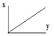
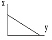
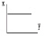
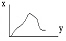
(정답률: 37%)
72. 다단계 피드백 큐(Multilevel feedback queue)에 대한 설명으로 옳지 않은 것은?
- 짧은 작업에 우선권을 준다.
- 입/출력 위주의 작업권에 우선권을 주어야 한다.
- 마지막 단계의 큐에서는 작업이 완료될 때까지 Round-Robin 방식을 통해 처리한다.
- 비선점(non-preemption)형 방식을 취한다.
(정답률: 44%)
73. 유닉스의 쉘(shell)에 관한 설명으로 옳지 않은 것은?
- 사용자와 커널 사이에서 중계자 역할을 한다.
- 스케쥴링, 기억장치 관리, 파일 관리, 시스템호출 인터페이스 등의 기능을 제공한다.
- 여러 가지의 내장 명령어를 가지고 있다.
- 사용자 명령의 입력을 받아 시스템 기능을 수행하는 명령어 해석기이다.
(정답률: 55%)
74. 준비상태에서 대기하고 있는 프로세스 중 하나가 스케쥴링되어 중앙처리장치를 할당받아 실행상태로 전이되는 과정을 무엇이라 하는가?
- 실행(Run)
- 준비(Ready)
- 대기(Waiting)
- 디스패치(Dispatch)
(정답률: 42%)
75. 디스크 스케쥴링 기법 중 SSTF(Shortest Seek Time-First)의 설명으로 옳은 것은?
- FCFS(first-come-first-served)보다 처리량이 많고 평균 응답 시간이 짧다.
- 응답시간의 편차가 작으므로 대화형 시스템에 적합하다.
- 대기행렬의 상태에 따라 항상 일정한 순서대로 처리하므로 신뢰도가 높다.
- 탐색거리가 짧은 요청이 먼저 서비스를 받게 되므로 디스크 요청의 기아 현상은 발생하지 않는다.
(정답률: 34%)
76. 분산 처리 시스템에 관한 설명으로 옳지 않은 것은?
- 약결합(loosely-coupled)으로 볼 수 있다.
- 업무량 증가에 따른 정진적인 확장이 용이하다.
- 높은 보안성이 유지된다.
- 제한된 자원을 여러 지역에서 공유 가능하다.
(정답률: 59%)
77. PCB(Process Control Block)가 포함하는 정보에 해당하지 않는 것은?
- 프로세스의 고유한 식별자
- 할당되지 않은 주변 기기들의 상태정보
- 프로세스의 부모 프로세스에 대한 포인터
- 프로세스의 현재 상태
(정답률: 67%)
78. 페이지 대체 기법 중 최적화 기법(optimal replacement)에 대한 설명으로 옳은 것은?
- 가장 오래 동안 사용하지 않은 페이지를 교체한다.
- 사용한 빈도수가 가장 낮은 페이지를 교체한다.
- 앞으로 가장 오래 동안 사용되지 않을 페이지와 교체한다.
- 앞으로 사용할 페이지 중 가장 빈도수가 낮은 것을 대체한다.
(정답률: 29%)
79. 가상기억장치에 있어서 세그멘테이션 기법과 페이징 기법에 대한 설명으로 옳지 않은 것은?
- 세그먼테이션 기법은 블록(block)이 고정적이다.
- 페이징 기법에서는 페이지 사상표를 보관할 장소가 요구된다.
- 세그먼테이션 기법에서는 기억장치 보호 키(storage protection key)가 필요하다.
- 페이징 기법에서 가상주소는 가상기억장치 내에서 참조될 내용이 들어있는 페이지 번호와 페이지 내에서 참조될 내용까지의 변위라는 두 개의 정보로 표현된다.
(정답률: 31%)
80. 디스크 헤드의 현 위치가 53 트랙에 있다고 가정할 대 SCAN 기법을 사용할 경우 대기 큐의 내용이 다음과 같을 때 처리 순서는 어떻게 되겠는가?
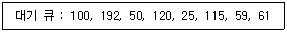
- 53-50-59-61-100-115-120-192-25
- 53-50-25-59-61-100-115-120-192
- 53-59-61-50-25-100-115-120-192
- 53-100-192-50-120-25-115-59-61
(정답률: 35%)
5과목: 정보통신개론
81. 음성, 데이터, 화상 등 여러 종류의 정보 신호를 디지털화하여 단일 망으로 총괄적인 서비스를 처리할 수 있는 정보통신망은 무엇이라고 부르는가?
- 부가가치통신망(VAN)
- 종합정보통신망(ISDN)
- 근거리통신망(LAN)
- 패킷공중정보통신망(PSDN)
(정답률: 55%)
82. LAN의 구성요소 중 Broad-LAN에서의 모뎀 및 Base Band-LAN에서 사용되는 송·수신기능과 같이 통신망에 모드를 접속하기 위한 것은?
- CIU
- BIU
- MAU
- MSU
(정답률: 20%)
83. 패키지계 뉴미디어에 속하지 않는 것은?
- CATV
- VTR
- 비디오 디스크
- CD-ROM
(정답률: 32%)
84. 국제전기통신연합의 약칭으로 국제 간 통신규격을 제정하는 산하기구를 두고 있는 것은?
- ITU
- BSI
- DIN
- JIS
(정답률: 72%)
85. 샤논(Shannon)의 정리에 따라 백색 가우스 잡음(white gauss noise)이 발생되는 통신로의 용량(C[bit/sec])을 나타내는 식으로 맞는 것은?
- C=Wlog2(1+S/N)
- C=Wlog10(1+S/N)
- C=Wlog2(1+N/S)
- C=Wlog10(1+N/S)
(정답률: 45%)
86. 다음 중 한 노드(node)가 절단되어도 우회로를 구성하여 통신이 가능한 형태의 통신망은?
- 버스(BUS)형
- 스타(STAR)형
- 링(RING)형
- 트리(TREE)형
(정답률: 45%)
87. 베어러(bearer) 속도의 단위는?
- bit/sec
- baud
- block/sec
- character/sec
(정답률: 41%)
88. HDLC의 데이터 전달모드가 아닌 것은?
- 표준 균형모드
- 표준 응답모드
- 비동기 균형모드
- 비동기 응답모드
(정답률: 40%)
89. ISDN 채널에 대한 설명으로 틀린 것은?(오류 신고가 접수된 문제입니다. 반드시 정답과 해설을 확인하시기 바랍니다.)
- A채널: 4㎑ 디지털 전화채널
- B채널: 음성이나 데이터를 위한 64kbps 디지털채널
- D채널: 8kbps 혹은 16kbps의 디지털 신호채널
- H채널: 384kbps, 1536kbps, 1920kbps의 디지털채널
(정답률: 29%)
90. 통신 프로토콜(protocol)의 기본 요소에 해당되지 않는 것은?
- 포맷(format)
- 구분(syntax)
- 의미(semantics)
- 타이밍(timing)
(정답률: 70%)
91. 다음 중 뉴 미디어의 특정이라고 볼 수 없는 것은?
- 대용량 및 고속성
- 상호작용성 및 비동기성
- 쌍방향성 및 탈대중화
- 네트워크화에 따른 지역별 협역화
(정답률: 47%)
92. 광섬유케이블의 장점이 아닌 것은?
- 대역폭이 넓어 정보 전송 능력은 향상되나 동축케이블보다 신호 감쇄현상이 매우 심하다.
- 전기적 잡음 영향을 받지 않기 때문에 신뢰성이 높다.
- 광을 이용하여 전송하기 때문에 보안성이 뛰어나다.
- 동축케이블에 비해 무게와 크기에서 이점을 갖는다.
(정답률: 67%)
93. 온-라인 시스템에 대한 설명으로 거리가 먼 것은?
- 온-라인 시스템의 통신제어장치는 시분할 처리방식을 사용한다.
- 은행 업무 및 좌석 예약 등에 주로 이용한다.
- 단말장치, 중앙처리장치, 통신제어장치, 통신회선 등으로 구성된다.
- 온-라인 시스템은 시분할처리방식과 일괄처리방식으로 나눌 수 있다.
(정답률: 42%)
94. 다음 중 정보통신의 의미를 가장 폭넓게 표현한 것은?
- 컴퓨터와 통신회선의 결합으로 전송기능에 통신처리 기능이 추가된 데이터 통신
- 컴퓨터와 통신기술이 결합된 것으로 정보처리가 가능한 컴퓨터 통신
- 정보통신망을 이용한 체계적인 정보의 전송을 위한 통신
- 컴퓨터와 통신기술의 결합에 의해 통신처리기능과 정보처리기능은 물론 정보의 변환, 저장과정이 추가된 형태의 통신
(정답률: 54%)
95. 다음 중 모뎀의 기능과 관련이 없는 것은?
- 변조와 복조 기능
- 펄스를 전송신호로 변환
- 언어번역 및 인식
- Data 통신 및 속도 제어
(정답률: 65%)
96. 데이터 통신에서 컴퓨터가 단말기에게 전송할 데이터의 유무를 묻는 것은?
- Polling
- Calling
- Selection
- Link up
(정답률: 55%)
97. 데이터 전송에서 1차원 Parity를 사용하는 목적은?
- 수신된 데이터에서 “1”의 개수를 셀 때
- 수신된 데이터에서 전송오류의 검출을 위해
- 수신된 데이터에서 전송오류의 정정을 위해
- 수신된 데이터에서 전송오류의 검출과 정정을 위해
(정답률: 62%)
98. 정보통신시스템의 기본 구성요소와 거리가 먼 것은?
- 다중변환장치
- 가입자단말장치
- 신호변환장치
- 통신제어장치
(정답률: 45%)
99. 데이터 전송에서 보오(Baud)속도가 1600[baud]이고 트리비트(tribit)를 사용한다면 bps 속도는 얼마인가?
- 1600[bps]
- 3200[bps]
- 4800[bps]
- 6400[bps]
(정답률: 70%)
100. 다음 중 데이터 전송제어 절차로 올바른 것은?
- 회선 연결→링크 설정→데이터 전송→링크 해제→회선 해제
- 회선 연결→데이터 전송→링크 설정→회선 해제→링크 해제
- 링크 설정→회선 연결→데이터 전송→회선 해제→링크 해제
- 링크 설정→데이터 전송→회선 연결→링크 해제→회선 해제
(정답률: 58%)